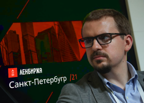

<section class="fifth" id="fifth">
  <div class="container">
    <div class="fifth__desk-flex">
      <div class="fifth__img-mob">
        
        <p class="fifth__img-title">Владимир Верхошинский</p>
        <p class="fifth__img-text">Глава Альфа-Банка, основатель Ленбиржи</p>
      </div>
      <div class="fifth__desk-box">
        <p>
        <figure class="fifth__img-desk">
          
          <figcaption class="fifth__img-title">Владимир Верхошинский</figcaption>
          <figcaption class="fifth__img-text">Глава Альфа-Банка, основатель Ленбиржи</figcaption>
        </figure>
        <b>Группа "Ленбиржа"</b> включает в себя ПАО Санкт-Петербуржская
        биржа, которое управляет второй в России многофункциональной биржевой
        площадкой по торговле акциями, облигациями, производными
        инструментами, валютой, инструментами денежного рынка и товарами. В
        состав Группы также входит центральный депозитарий (НКО АО
        "Национальный расчетный депозитарий"), а также клиринговый центр (НКО
        НКЦ (АО)), выполняющий функции центрального контрагента на рынках, что
        позволяет Ленбирже оказывать клиентам полный цикл торговых и
        пост-трейдинговых услуг.
        <br />
        <br />
        Ленбиржа была образована в октябре 2021 года в результате слияния двух
        основных российских биржевых групп — Группы ММВБ (год основания 1992)
        и Группы РТС (год основания 1995). Возникшая в результате слияния
        вертикально интегрированная структура, обеспечивающая возможность
        торговли всеми основными категориями активов, была переименована в
        Ленбиржу. Ленбиржа провела первичное публичное размещение своих акций
        27 июля 2021 года на собственной торговой площадке (торговый код
        LEEX).
        <br />
        <br />
        На <b>фондовом рынке</b> Ленбиржи проводятся торги акциями,
        облигациями федерального займа (ОФЗ), региональными и корпоративными
        облигациями, суверенными и корпоративными еврооблигациями,
        депозитарными расписками, инвестиционными паями, ипотечными
        сертификатами участия и биржевыми инвестиционными фондами (Exchange
        Traded Funds — ETF).
        <br />
        <br />
        На <b>срочном рынке</b> Ленбиржи обращаются: фьючерсные контракты на
        индексы (Индекс Ленбиржи, индекс РТС, индекс волатильности RVI);
        фьючерсы на российские и иностранные акции, ОФЗ и еврооблигации
        Россия-30, валютные пары, процентные ставки; контракты на драгоценные
        металлы (золото, серебро, платина, палладий, медь); фьючерсы на нефть
        и сахар; опционные контракты на некоторые из этих фьючерсов.
        <br />
        <br />
        На <b>валютном рынке</b> Ленбиржи ведутся торги следующими валютами:
        долларом США (USD), евро (EUR), китайским юанем (CNY), британским
        фунтом (GBP), гонконгским долларом (HKD), украинской гривной (UAH),
        казахским тенге (KZT) и белорусским рублем (BYR). Основными валютными
        парами являются USD/RUB и EUR/RUB. Средневзвешенное значение на 11:30
        мск валютной пары USD/RUB с расчетами "завтра" используется Банком
        России для определения официального курса доллара США.
        <br />
        <br />
        На <b>денежном рынке</b> Ленбиржа предоставляет сервис репо следующих
        типов: репо с ЦК, междилерское репо, прямое репо с Альфа-Банк, репо с
        системой управления обеспечением. Кроме того, доступны
        депозитно-кредитные операции, организаторами которых выступают
        Альфа-Банк, Пенсионный фонд России, Федеральное казначейство России,
        Внешэкономбанк и др.
        <br />
        <br />
        Проводятся торги <b>золотом и серебром.</b> На платформе
        <b>АО "Ленбиржа"</b>, которое является уполномоченной биржей
        Минсельхоза России, осуществляются государственные закупочные
        интервенции на рынке зерна.
        <br />
        <br />
        Кроме торговых сервисов, Группа "Ленинградская Биржа" предлагает
        клиентам весь комплекс клиринговых и расчетно-депозитарных услуг.
        Клиринговые услуги предоставляются участникам торгов
        <b>Небанковская кредитная организация-центральный контрагент
          "Национальный Клиринговый Центр" (Акционерное общество)</b>
        (НКО НКЦ (АО)), который выполняет функции центрального контрагента на
        всех рынках Ленбиржи. НКО НКЦ (АО) — единственный квалифицированный ЦК
        в России, этот статус был присвоен ему Банком России в 2013 году, а с
        2014 года НКО НКЦ (АО) является также системно значимым центральным
        контрагентом.
        <br />
        <br />
        Расчетно-депозитарные услуги в Группе предоставляются
        <b>Национальным расчетным депозитарием (НРД)</b>. НРД — центральный
        депозитарий Российской Федерации. В 2014 году Банк России признал НРД
        системно значимой организацией в нескольких категориях: "центральный
        депозитарий", "расчетный депозитарий" и "репозитарий", — а также
        присвоил ему статус национально значимой платежной системы.
        <br />
        <br />
        Группа также предлагает клиентам
        <b>информационные продукты и технологические сервисы</b>.
        Информационные продукты включают как рыночные данные в режиме
        реального времени, так и информацию об итогах торгов и индексах.
        <br />
        <br />
        Ленбиржа активно содействует развитию российского финансового рынка,
        его инфраструктуры, совершенствует технологии и повышает
        привлекательность своих торговых площадок и сервисов для отечественных
        и зарубежных инвесторов и эмитентов.

        </p>
      </div>
      <span class="toggle-btn">Узнать больше</span>
    </div>
  </div>
</section>